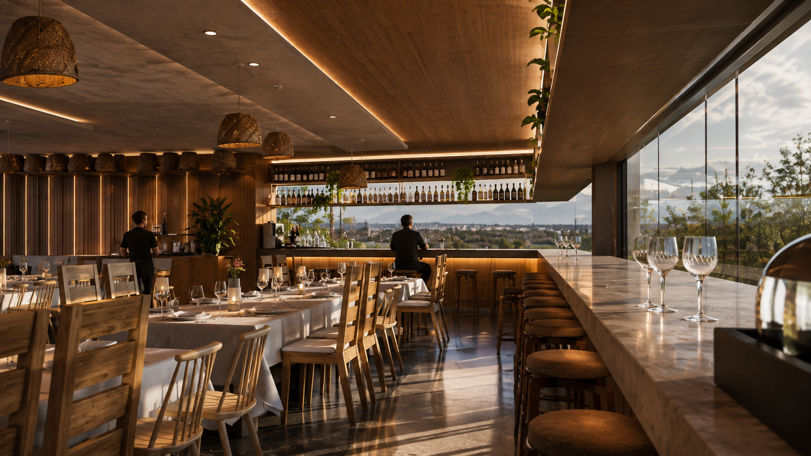
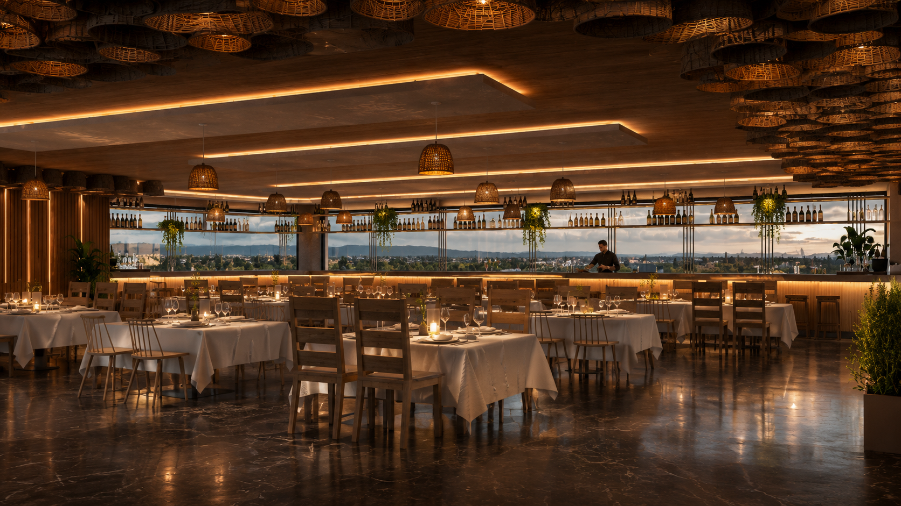

SPACE
& FORM.
EL
ARCHIVO.
La arquitectura se entiende mejor cuando también vemos lo que hay detrás de la imagen.
El archivo reúne THE EYE HUB —con su investigación urbana, plantas y secciones— y las primeras dos vistas de un nuevo proyecto interior. Recorre los renders para entrar a cada obra.
THE EYE
HUB.
De un bar de barrio a un espacio flexible para encontrarse.
Esta propuesta explora la transformación de RJ Bar, en Puebla, mediante una estructura que permite distintos programas a lo largo del día. El proyecto estudia la relación entre el edificio y la calle, el espacio público, la comunidad y la flexibilidad arquitectónica.
PROYECTO
02.
Dos vistas. Un nuevo proyecto por descubrir.
Estas primeras visualizaciones muestran un espacio interior de hospitalidad, con barra, comedor, materiales cálidos y vistas panorámicas. Este archivo crecerá conforme avance el proyecto.
VISTAS ORIGINALES · DOCUMENTACIÓN TÉCNICA PENDIENTE


PLANTAS
(en capas).
Cuatro niveles de un mismo sistema: las áreas de servicio permanecen, mientras los espacios centrales y laterales se transforman. Los dibujos conservan sus líneas y anotaciones, ahora sin el fondo de papel del PDF.


SECCIONES
(del espacio).
Dos lecturas del edificio en sección. Los niveles, las armaduras y las circulaciones revelan su estructura espacial y su flexibilidad. Consulta las cotas y detalles en el documento técnico final.


SKILLS.
Dibujo, modelo y representación. Las herramientas cambian; el criterio es lo que quiero seguir desarrollando.
DIBUJO Y MODELADO
AutoCAD / Rhino / SketchUp
REPRESENTACIÓN VISUAL
Photoshop / Illustrator
FORMA DE TRABAJAR
Exploración espacial / Desarrollo conceptual / Representación / Aprendizaje continuo
Primer esquema de herramientas y habilidades; pendiente de ampliar y verificar niveles de dominio antes de usarlo en postulaciones.